When explaining p-values, I like to use randomisation tests rather than t-tests or F-tests or what-have-you as their assumptions are easier to verify and you don’t need a lot of maths to run them. See the blog post The population model and the randomisation model of statistical inference for some background.
Exhaustive rerandomisation
Let’s create a fictitious dataset of an experiment in which 18 participants were randomly assigned to one of two groups (9 participants per group). These data are just randomly drawn numbers between 1 and 20 for both conditions.
d <- data.frame(
outcome = sample(1:20, size = 18, replace = TRUE),
group = rep(c("control", "treatment"), each = 9)
)
boxplot(outcome ~ group, d)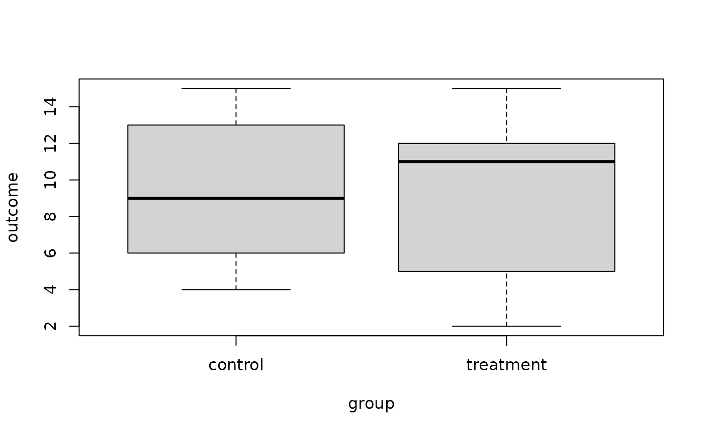
By default, the function rand_test() computes
p-values between two conditions using exhausitive
rerandomisation. Its outcome parameter takes the outcome
data; the treatment_idx parameter takes the indices of the
treatment group (obtained below using which()), and the
statistic parameter specifies which test statistic should
be used. To compute p-values for the mean
difference, we proceed as follows:
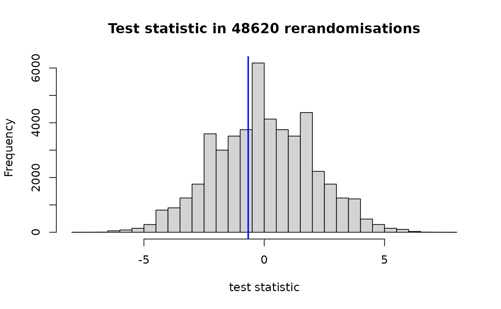
#> $`left-sided p-value`
#> [1] 0.3938914
#>
#> $`right-sided p-value`
#> [1] 0.6450843
#>
#> $`two-sided p-value`
#> [1] 0.7877828In the histogram, the observed test statistic is highlighted by the blue vertical line.
Instead, we could have run a test on the difference between the condition medians like so:
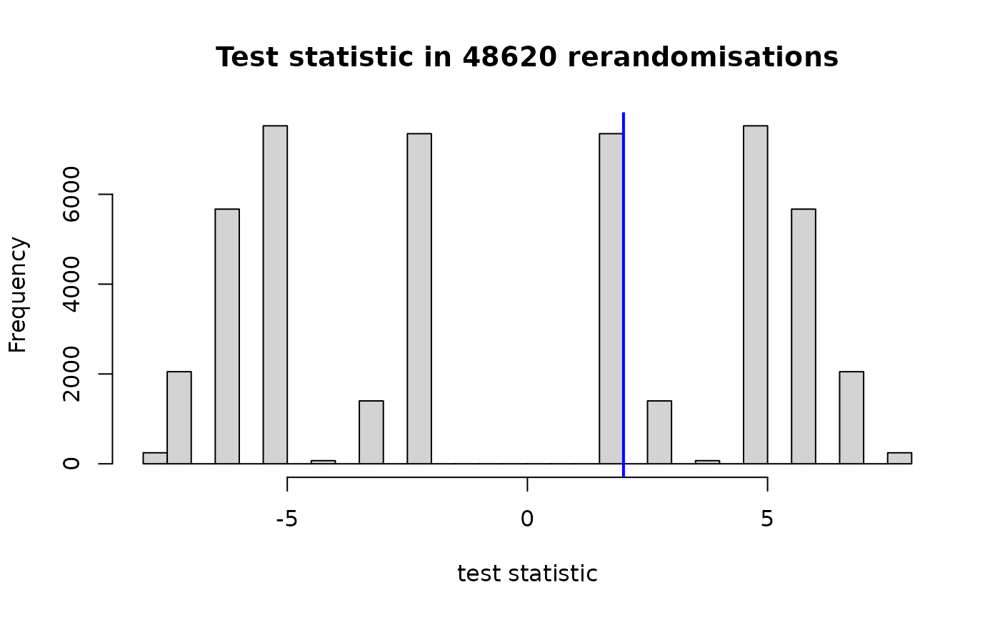
#> $`left-sided p-value`
#> [1] 0.6511724
#>
#> $`right-sided p-value`
#> [1] 0.5
#>
#> $`two-sided p-value`
#> [1] 1Some further test statistics are predefined (see
?test_statistics), e.g., the probability of superiority
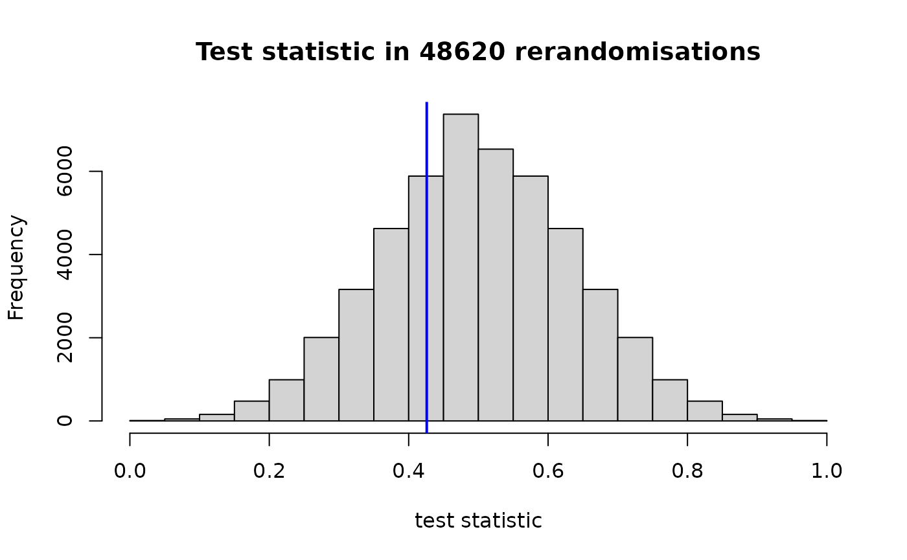
#> $`left-sided p-value`
#> [1] 0.3083916
#>
#> $`right-sided p-value`
#> [1] 0.7065817
#>
#> $`two-sided p-value`
#> [1] 0.6167832or the studentised mean difference:
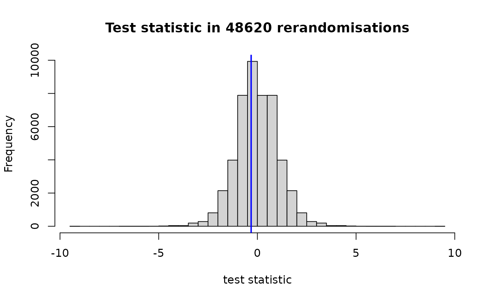
#> $`left-sided p-value`
#> [1] 0.3938914
#>
#> $`right-sided p-value`
#> [1] 0.6450843
#>
#> $`two-sided p-value`
#> [1] 0.7877828You can also adapt the mean_diff() so that it works for,
say, trimmed means:
trimmed_mean_diff <- function(outcome, treatment_idx) {
mean(outcome[treatment_idx], trim = 0.1) - mean(outcome[-treatment_idx], trim = 0.1)
}
rand_test(d$outcome, which(d$group == "treatment"), statistic = trimmed_mean_diff)
#> $`left-sided p-value`
#> [1] 0.3938914
#>
#> $`right-sided p-value`
#> [1] 0.6450843
#>
#> $`two-sided p-value`
#> [1] 0.7877828Unequal group sizes
Nothing hinges on the group sizes being equal. Here’s an example with group sizes 7 and 11 instead of 9 and 9.
d <- data.frame(
outcome = sample(1:20, size = 18, replace = TRUE),
group = rep(c("control", "treatment"), times = c(7, 11))
)
boxplot(outcome ~ group, d)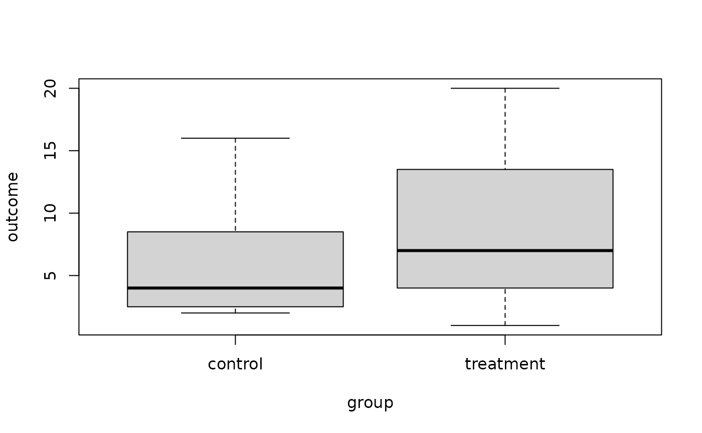
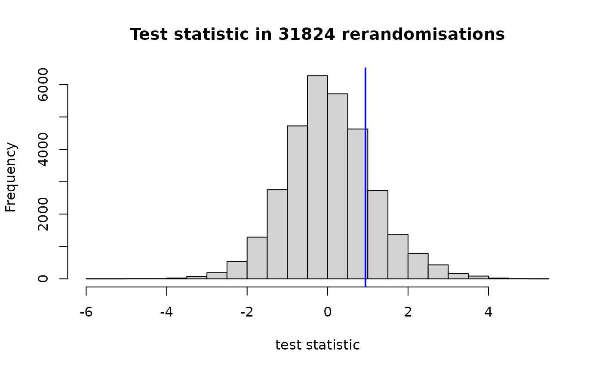
#> $`left-sided p-value`
#> [1] 0.8112745
#>
#> $`right-sided p-value`
#> [1] 0.1892911
#>
#> $`two-sided p-value`
#> [1] 0.3785822Monte Carlo rerandomisation
For larger group sizes, we need to use the Monte Carlo method
instead. This, too, is implemented in the rand_test()
function. To illustrate its use, we’ll use part of a dataset of a study
I once ran. It was hypothesised that the participant in the
ij-ei condition would obtain higher scores than those in the
oe-u condition.
d <- structure(list(Subject = c("S10", "S100", "S11", "S12", "S14",
"S15", "S16", "S18", "S2", "S20", "S21", "S22", "S23", "S25",
"S28", "S29", "S3", "S32", "S33", "S34", "S35", "S36", "S37",
"S38", "S39", "S4", "S40", "S41", "S42", "S43", "S44", "S45",
"S47", "S48", "S49", "S5", "S50", "S51", "S52", "S53", "S54",
"S55", "S56", "S57", "S58", "S59", "S6", "S60", "S61", "S62",
"S63", "S64", "S66", "S67", "S68", "S69", "S7", "S70", "S71",
"S73", "S74", "S76", "S77", "S78", "S79", "S8", "S80", "S81",
"S82", "S83", "S85", "S86", "S88", "S89", "S90", "S91", "S93",
"S94", "S96", "S97"), LearningCondition = c("oe-u", "ij-ei",
"oe-u", "ij-ei", "ij-ei", "oe-u", "ij-ei", "ij-ei", "oe-u", "oe-u",
"ij-ei", "oe-u", "ij-ei", "ij-ei", "oe-u", "ij-ei", "ij-ei",
"oe-u", "ij-ei", "ij-ei", "oe-u", "ij-ei", "ij-ei", "oe-u", "ij-ei",
"ij-ei", "ij-ei", "ij-ei", "oe-u", "oe-u", "ij-ei", "ij-ei",
"ij-ei", "oe-u", "oe-u", "oe-u", "ij-ei", "ij-ei", "ij-ei", "ij-ei",
"oe-u", "oe-u", "ij-ei", "oe-u", "oe-u", "oe-u", "oe-u", "oe-u",
"ij-ei", "oe-u", "ij-ei", "ij-ei", "oe-u", "oe-u", "oe-u", "ij-ei",
"ij-ei", "ij-ei", "ij-ei", "ij-ei", "oe-u", "ij-ei", "oe-u",
"ij-ei", "oe-u", "ij-ei", "oe-u", "oe-u", "oe-u", "oe-u", "oe-u",
"ij-ei", "oe-u", "oe-u", "ij-ei", "ij-ei", "ij-ei", "ij-ei",
"ij-ei", "oe-u"), PropCorrect = c(0.19047619047619, 0.380952380952381,
0.285714285714286, 0.523809523809524, 0.285714285714286, 0.142857142857143,
0.428571428571429, 0.80952380952381, 0.0952380952380952, 0.0952380952380952,
0.19047619047619, 0.0952380952380952, 0.714285714285714, 0.285714285714286,
0.0952380952380952, 0.238095238095238, 0.19047619047619, 0.619047619047619,
0.666666666666667, 0.238095238095238, 0.428571428571429, 0.142857142857143,
0.333333333333333, 0.761904761904762, 0.19047619047619, 0.714285714285714,
0.571428571428571, 0.666666666666667, 0.428571428571429, 0.238095238095238,
0.904761904761905, 0.333333333333333, 0.380952380952381, 0.238095238095238,
0.476190476190476, 0.285714285714286, 0.380952380952381, 0.714285714285714,
0.761904761904762, 0.142857142857143, 0.333333333333333, 0.333333333333333,
0.333333333333333, 0.285714285714286, 0.380952380952381, 0.238095238095238,
0.333333333333333, 0.476190476190476, 0.333333333333333, 0, 0.714285714285714,
0.333333333333333, 0.142857142857143, 0.333333333333333, 0.333333333333333,
0.476190476190476, 0.666666666666667, 0.714285714285714, 0.523809523809524,
0.0952380952380952, 0.380952380952381, 0.333333333333333, 0.142857142857143,
0.80952380952381, 0.238095238095238, 0.333333333333333, 0.285714285714286,
0.619047619047619, 0.285714285714286, 0.142857142857143, 0.19047619047619,
0.333333333333333, 0.333333333333333, 0.142857142857143, 0.571428571428571,
0.333333333333333, 0.428571428571429, 0.142857142857143, 0.0952380952380952,
0.285714285714286)), class = "data.frame", row.names = c(NA,
-80L))
boxplot(PropCorrect ~ LearningCondition, d)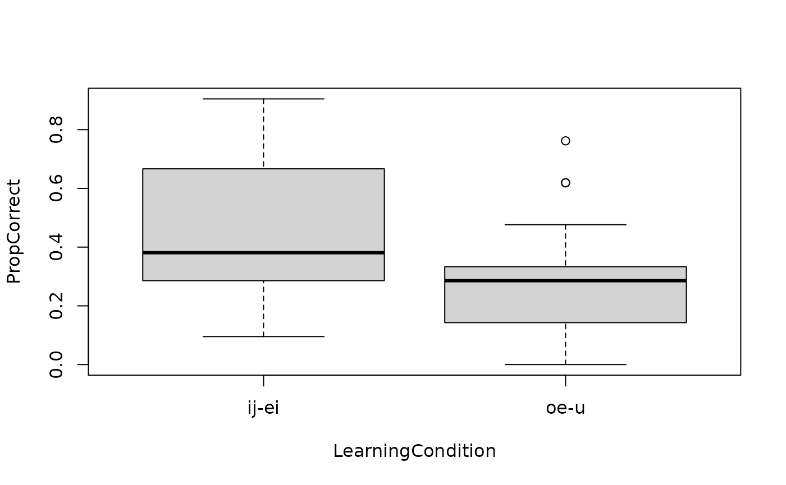
Use exact = FALSE to use the Monte Carlo method. By
default, 20000 reallocations are generated (including the one actually
obtained); you can change this number via the M
parameter:
rand_test(d$PropCorrect, which(d$LearningCondition == "ij-ei"),
statistic = prob_super, exact = FALSE)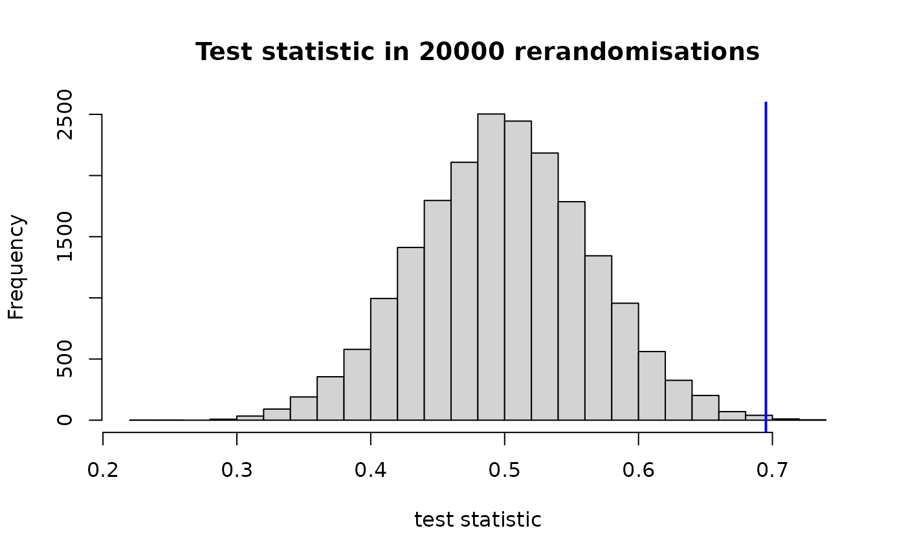
#> $`left-sided p-value`
#> [1] 0.9991
#>
#> $`right-sided p-value`
#> [1] 0.00095
#>
#> $`two-sided p-value`
#> [1] 0.0019Randomisation tests for blocked designs
The following fictitious dataset comprises 32 participants arranged in 16 blocks of two participants each:
d <- structure(list(Block = c(1L, 1L, 2L, 2L, 3L, 3L, 4L, 4L, 5L,
5L, 6L, 6L, 7L, 7L, 8L, 8L, 9L, 9L, 10L, 10L, 11L, 11L, 12L,
12L, 13L, 13L, 14L, 14L, 15L, 15L, 16L, 16L), Condition = c("intervention",
"control", "control", "intervention", "control", "intervention",
"control", "intervention", "intervention", "control", "intervention",
"control", "control", "intervention", "control", "intervention",
"control", "intervention", "intervention", "control", "intervention",
"control", "control", "intervention", "control", "intervention",
"control", "intervention", "control", "intervention", "control",
"intervention"), Score = c(-3.0784700250814, -2.04185038339847,
-1.85824556248386, -0.452891923289946, -0.399630796930755, -0.313966460118076,
-0.619142676095193, -0.404472103693484, -0.0675902401328488,
-0.537182166683201, 1.15210580663099, -0.43374079035467, -0.344900313631999,
0.592759164907358, 0.963498630361429, 0.109796850196813, 0.0415642494470597,
0.784497826488234, 0.670044380232945, 0.590323107343662, 0.584706784669443,
0.0419887429871804, 1.11284211831769, 1.7750932157465, 1.40609979493584,
1.35469666637164, 0.716270504357298, 1.57743794034306, 1.42362181491362,
1.36480038789931, 2.10757857807719, 2.36684343696841)), class = "data.frame", row.names = c(NA,
-32L))
library(ggplot2)
ggplot(d,
aes(x = Score, y = reorder(factor(Block), Score),
shape = Condition)) +
geom_point() +
scale_shape_manual(values = c(1, 3)) +
xlab("Outcome") +
ylab("Block") +
theme(legend.position = "bottom")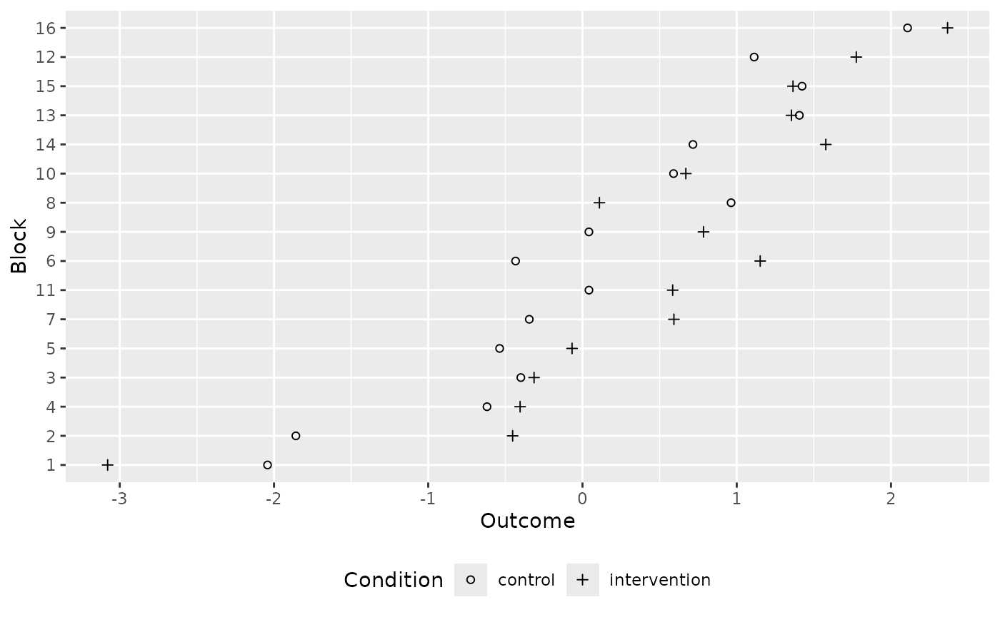
We can use the rand_test() function and specify the
block parameter to run a randomisation test that takes the
blocking structure into account.
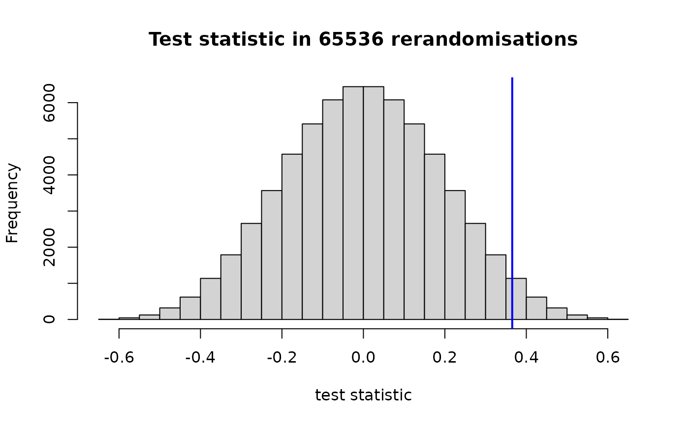
#> $`left-sided p-value`
#> [1] 0.9717407
#>
#> $`right-sided p-value`
#> [1] 0.02827454
#>
#> $`two-sided p-value`
#> [1] 0.05654907If there are many blocks (perhaps 17 or more), we need to use the Monte Carlo method instead:
rand_test(d$Score, which(d$Condition == "intervention"), d$Block,
statistic = mean_diff, exact = FALSE)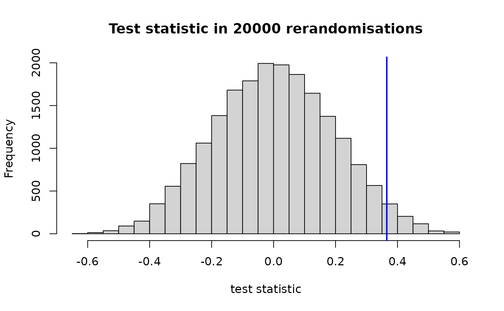
#> $`left-sided p-value`
#> [1] 0.9692
#>
#> $`right-sided p-value`
#> [1] 0.03085
#>
#> $`two-sided p-value`
#> [1] 0.0617